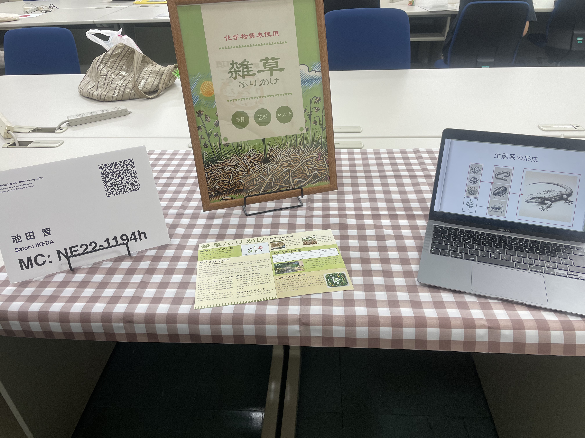
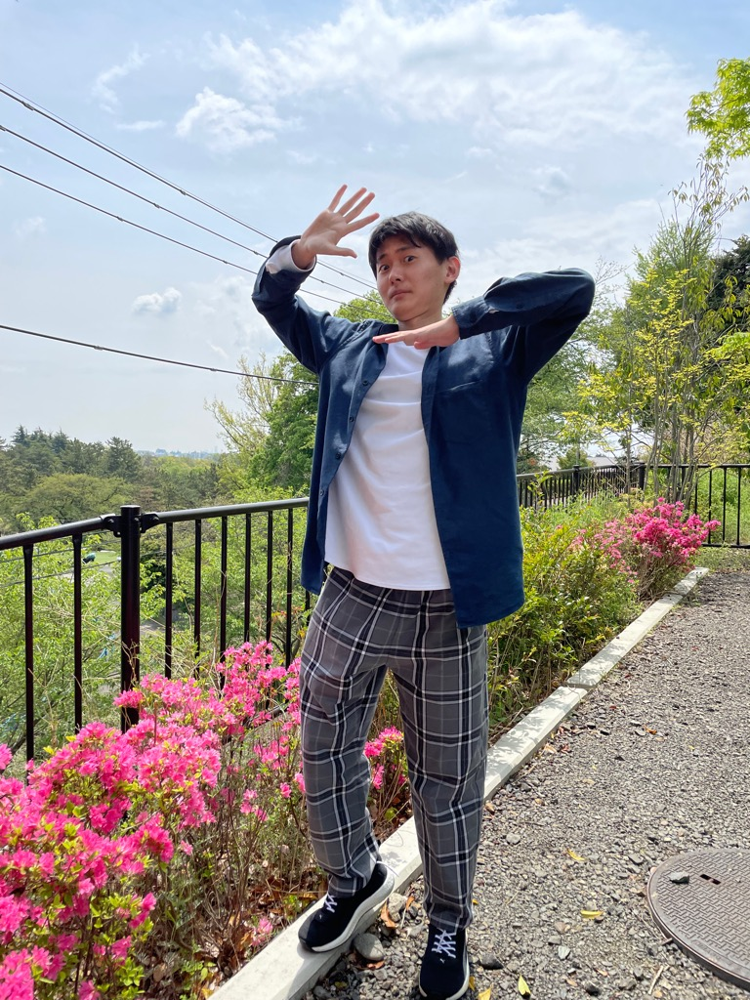

Field Seminar Portfolio

About

池田智 -Ikeda Satoru-
2003年10月生まれ。神奈川県出身。趣味は「ゲーム」、「旅行」、「日記を書くこと」。
「SatoInk.」とは「Sato(名前)」と「Ink(インク)」を組み合わせたもの。「Ink」は紙に染み込むようにデザインが人々の心に深く刻まれること、「.(ドット)」はInc.に似せ、企業体のような信頼感があるという意味。
Skills
- Adobe Illustrator
- Adobe Photoshop
- Figma
- HTML
- CSS
- JavaScript